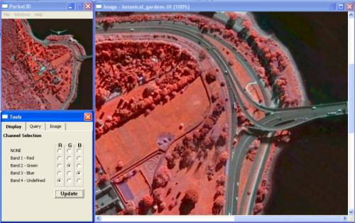

|
|
|
|
|
|
|
|
|
Release 1 Specifications
Graphical User Interface
The Graphical User Interface will consist of multiple windows:
• Overview window - displays an overview of the image and menu items
• Main image window - contains the main image which can be panned and zoomed
• Tools window - containing tabs for Display, Query and Image
• Display tab - contains radio buttons for selecting image bands to be displayed
• Query tab - contains the values for each band for the pixel the cursor is hovering over in the main image window
• Image tab - Contains meta data relating to the loaded image

Image File Management
The user will be able to load and analyse images in the JPEG 2000 and ECW file formats.
Functionality
The user will have the ability to arrange windows. Each colour channel will be
able to represent a spectral band. This can be assigned in the Display tab of the
Tools window window containing the channel information. The main image window
will have the ability to be panned and zoomed and will accommodate for scaling
effects. The query tab of the Tools window displaying the values of the channels
represented by a pixel in the main viewing window will update as the mouse cursor
moves from one pixel to the next in the main image window.
| |
|
|
| |
|
|
|
|